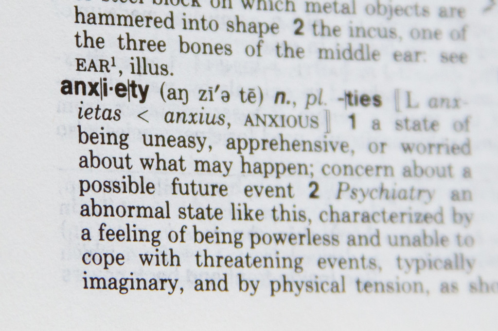

A career in academia is stressful. There are constant pressures to “publish or perish”, find sources of funding to sustain your work and complete a never-ending workload that, more often than not, tends to extend beyond the five day work week. The environment is highly competitive and often requires a willingness to be flexible, continually upskill and strategically plan ahead. These pressures exist when things are going well. Politics within academia can also add a layer of complexity to an already demanding profession. Combine all of this with an increasing number of short-term contracts and it can all seem like too much.
Although, there are notable positives that arise from these challenges. Whilst highly competitive, academia is filled with incredible minds with unique and interesting viewpoints, which results in meaningful, fulfilling discussions that inspire critical thought. Furthermore, whilst the integration of technology with academia has created an immediacy to tasks and deadlines, it has also provided a platform for limitless self-directed learning and fostered productive international collaborations. If you want to experience incredible personal growth, you will find no bigger advocate for a career in academia than myself.
But at what cost?
I have seen incredibly intelligent academics miss out on funding opportunities, resulting in difficult questions. Do I change research directions? Do I uproot my life and live elsewhere to pursue my research? Will funding opportunities be likely in the future? There is a lack of stability in the current academic environment, which is adding intense pressure to an already demanding profession. Major life decisions are difficult to address when the question of “will I have a salary next year?” remains unanswered.
Stability in the profession is often (but not always) accompanied by good metrics. Improving your publication output, publishing in high quality journals, the number of students that you supervise and your teaching performance are just a few metrics used to assess performance. The pursuit of these metrics may be leading academics away from spending time on one of the core foundations of academia.
Thinking.
Thinking about complex problems. Thinking about current findings. Thinking about potential studies that can answer these questions. Just thinking.
Sometimes it can be hard to dedicate time to think, write and discuss within academia due to the demands of the profession. However, currently the engine of academia is still being pushed and high quality research is still being produced, which makes me wonder whether the machine will ever burnout?
This environment can be conducive to stress and anxiety. It is difficult to completely eliminate these things, but hopefully the message of this blog post is to be aware of these stressors and practice self-care. Organise your calendar so that you have time to yourself. Take a moment to speak with a colleague, especially when things are tough. Whilst academia is challenging, remember that it can also be an incredibly rewarding profession to be a part of. Very few people can say that they live every day on the cusp of what is known and what is unknown. Every step you take counts.